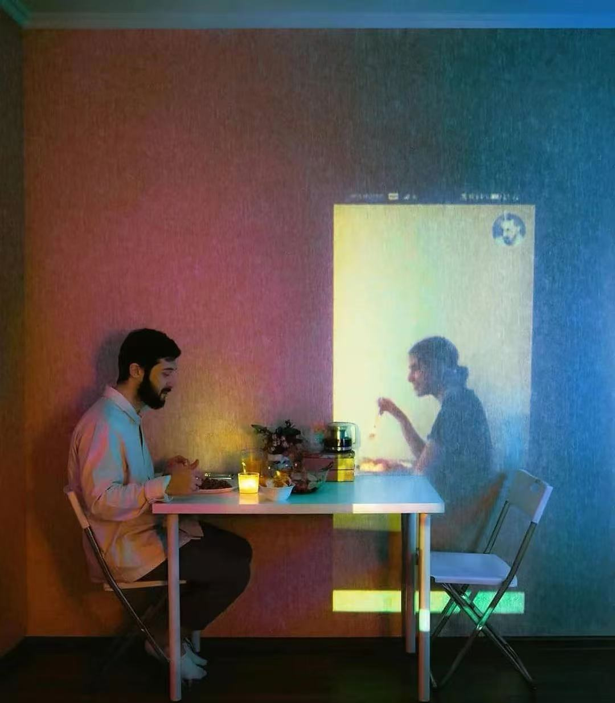
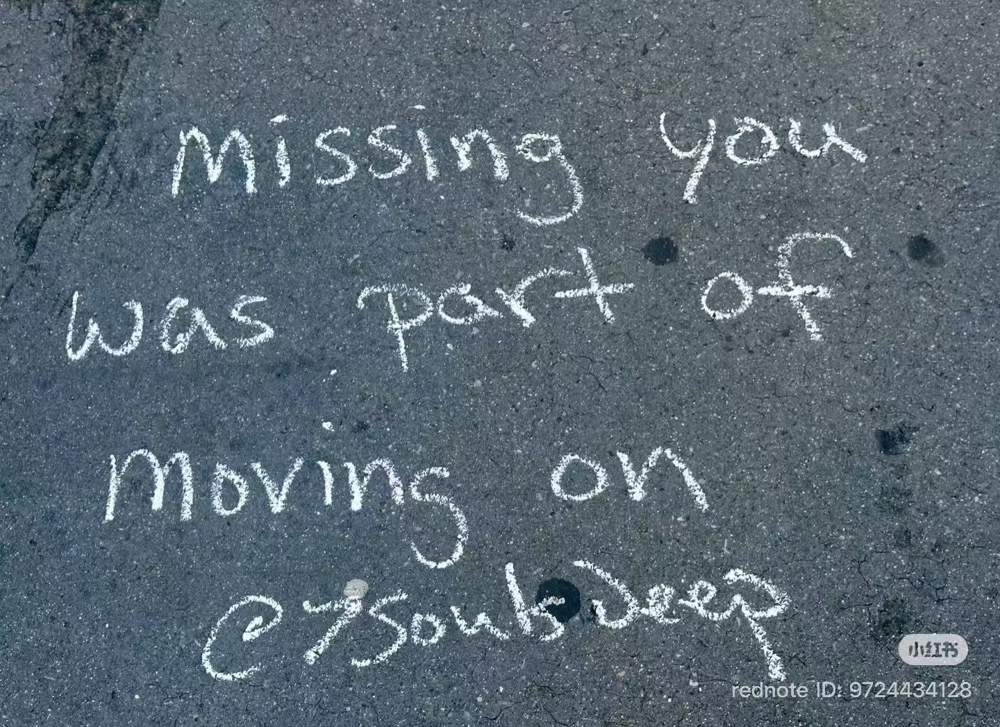

search
miss
to feel the absence of someone
to reach for what is no longer there
to remember, involuntarily
To miss someone is to live with a quiet interruption.
It is not just remembering, but repeatedly encountering their absence in places they no longer occupy.


miss in cinema